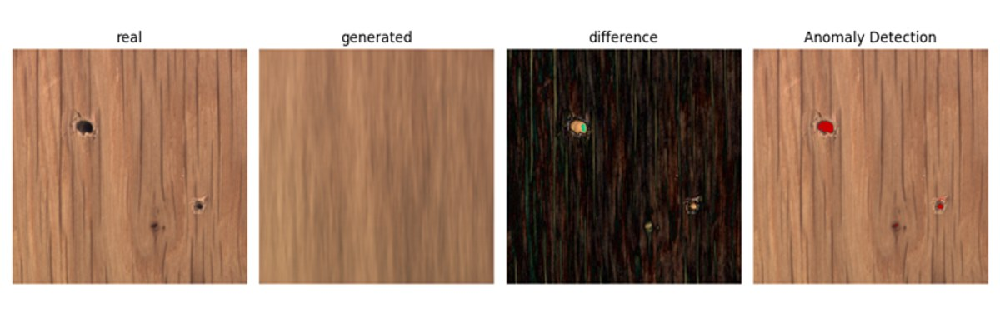
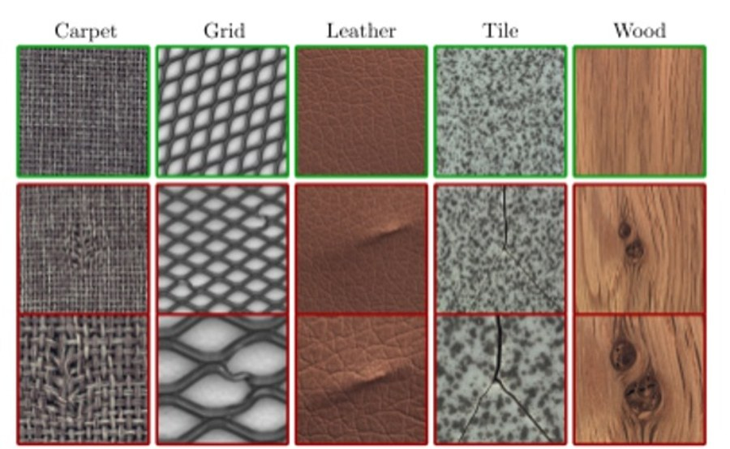
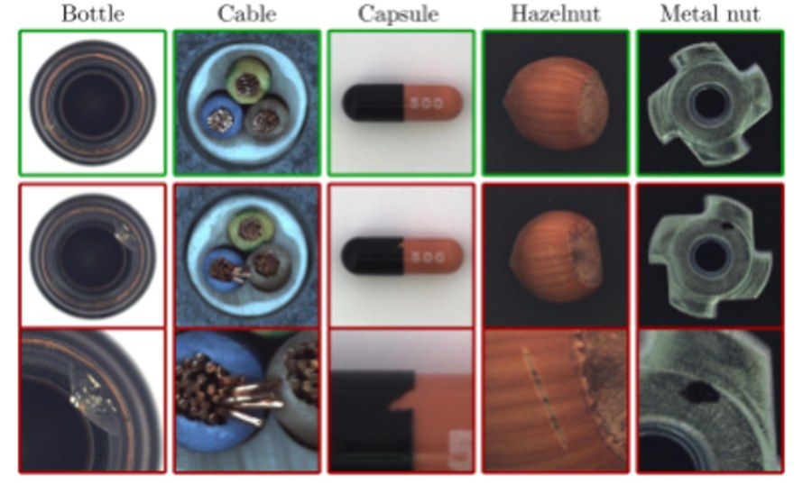
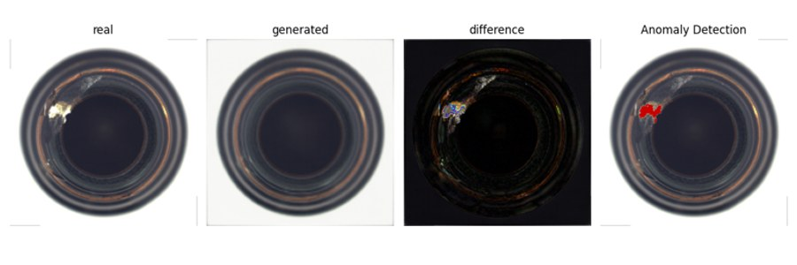

Deep Learning Anomaly Detection

Dataset & Model Architectures


MVTec AD covers both regular/random textures (Carpet, Grid, Leather, Tile, Wood — top row) and rigid or deformable manufactured objects (Bottle, Cable, Capsule, Hazelnut, Metal nut — bottom row), each with nominal (green border) and defective (red border) examples. The 7-layer strided-convolutional CAE encodes images (256×256, RGB) through channel depths of 32–1024 into a dense bottleneck, decoding via a symmetric transposed-convolutional decoder; the AAE instead routes the encoding through a 512-d layer producing a mean/log-variance pair for reparameterized latent sampling, regularized by a 1D adversarial discriminator that pulls the latent distribution toward a Gaussian prior. Training data was expanded to 10,000 patches per category via class-aware augmentation (rotated crops for textures, translation/rotation/mirroring respecting object symmetry for objects).
Loss Functions & Thresholding
To overcome the tendency of a plain L2 (MSE) loss to blur sharp edges on complex textures, the pipeline implements a custom Multi-Scale Structural Similarity (MS-SSIM) loss evaluated over 5 pooling levels with normalized Wang weights, with positive-range corrections to keep it numerically stable under extreme saturation. Joint CAE/AAE training required careful gradient stabilization: discriminator output clipping (ε=10-7), 1.0 gradient-norm clipping, bidirectional label smoothing (0.9/0.1), and an asymmetric 1:5 discriminator/encoder learning-rate split. At inference, an automated binary-search routine calibrates the anomaly-map decision threshold on a held-out validation split, after which connected-component analysis filters isolated regions smaller than a resolution-adaptive minimum area (scaled from a 50 px baseline at 900×900) to suppress noise-driven false positives.
Results

Tools and Technologies
- Machine Learning: PyTorch, Torchvision, Generative Autoencoders (CAE/AAE)
- Algorithms: MS-SSIM, Morphological Filtering, Binary Search Calibration
- Key Concepts: Unsupervised anomaly detection, adversarial regularization, reconstruction-based defect localization